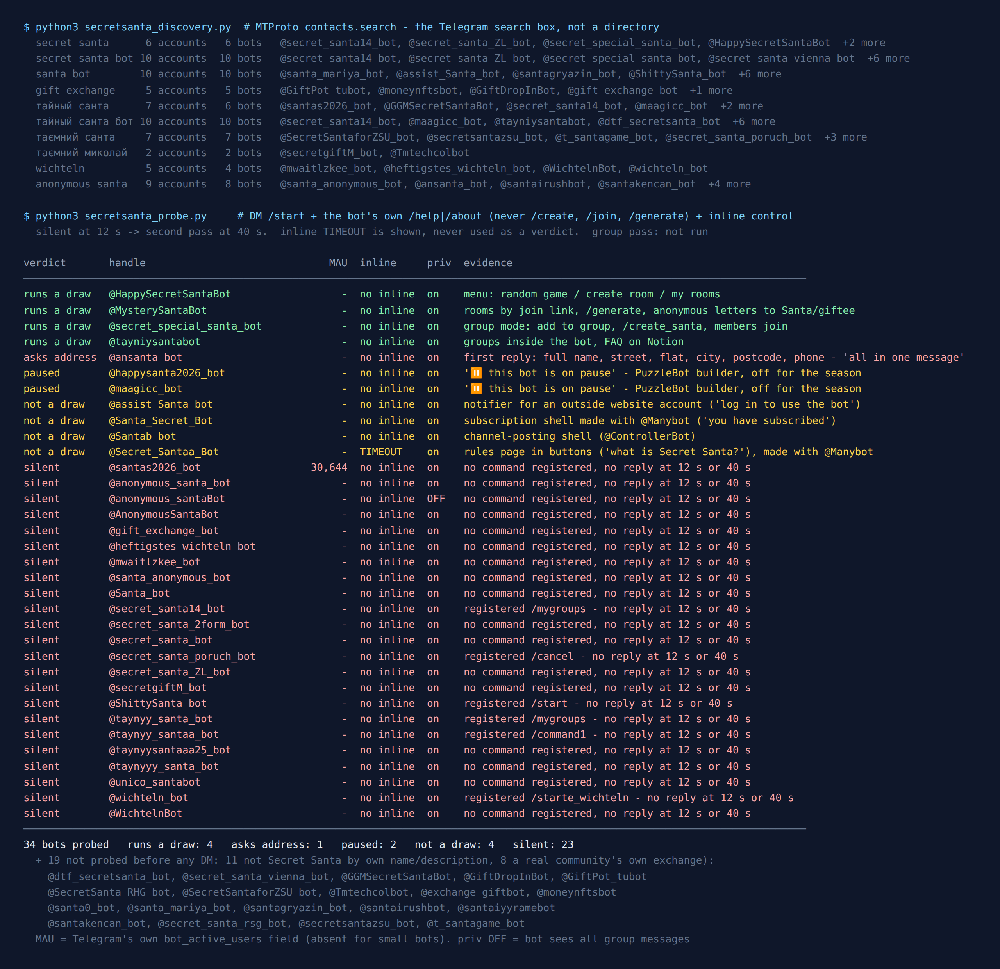

Telegram Secret Santa Bots: 53 Found, 11 Awake in September
Secret Santa asks a group chat to do the one thing it is worst at: tell every person a single name that nobody else gets to see. A chat is built for everyone reading everything. So the real question about a Secret Santa bot is where the draw result goes, and whether the bot is still switched on when you need it.
That second part is why I ran this in September. On the evening of 25 September 2026 I asked Telegram’s own search which Secret Santa bots exist, messaged every one that looked like the real thing, and wrote down what came back. Three months early, on purpose: a seasonal bot that is dead in September may wake up in December, or it may be a username someone registered for one office party years ago. If you are organising one this year, you want to know which is which early.
53 bots came back. 11 of the 34 I messaged answered in any way at all, and 23 stayed silent at twelve seconds and again at forty. Two of the ones that answered said, honestly, that they are on pause. One woke up only on the second pass and asked for my full name, home address and phone number before saying anything else. And the only bot with a number on Telegram’s own user counter said nothing at all.

Why a bot at all: the paper hat fails 63% of the time
The analogue version is names in a hat. Everyone draws one, and if you pull your own name, everybody puts theirs back and you start again. Few people know how often that happens.
A draw where nobody gets their own name is what mathematicians call a derangement, and the share of random draws that come out that way settles almost immediately at about 1 in e, or 36.8%. I didn’t want to quote a constant from memory, so I shuffled it: 200,000 simulated hat draws for each group size, with a fixed seed.
| People | Clean draws (simulated) | Exact | Hat needs a redraw |
|---|---|---|---|
| 4 | 37.5% | 37.5% | 62.5% |
| 5 | 36.5% | 36.7% | 63.5% |
| 6 | 36.8% | 36.8% | 63.2% |
| 8 | 36.8% | 36.8% | 63.2% |
| 10 | 36.7% | 36.8% | 63.3% |
| 12 | 36.9% | 36.8% | 63.1% |
| 20 | 36.8% | 36.8% | 63.2% |
From four people up, almost two draws in three fail and the average group needs 2.7 attempts before it gets a clean one. Every failed attempt also leaks something: the person who pulled their own name has to say so out loud. A bot draws once, privately, and never shows anyone a slip of paper. That is the whole value, and why a bot that is asleep when you need it is worse than a hat.
How the list was built
This list came from the platform, not a directory. Telegram’s search box calls an API method named contacts.search, which only returns accounts that exist right now. I ran ten queries, written down before anything was measured: secret santa, secret santa bot, santa bot, gift exchange, тайный санта, тайный санта бот, таємний санта, таємний миколай, wichteln and anonymous santa. The Cyrillic ones are the Russian and Ukrainian names of the game (in Ukraine it is often tied to St Nicholas rather than Santa), and Wichteln is the German one.
That produced 53 distinct accounts. I did not message 19 of them, and the reasons are worth saying:
- 11 were not Secret Santa at all, by their own name or description. Four were trading bots for Telegram’s collectible Gifts, which is what “gift exchange” mostly means on Telegram now. Three were stranger-chat bots (one labelled 18+) that had “santa” in the username. The rest: a tarot bot, a crypto bot, a channel promo and the feedback inbox of one organisation’s gift swap.
- 8 belonged to a real group’s own exchange: an annual Secret Santa in Vienna, two raising gifts for Ukrainian soldiers, a media company’s own draw, and several with a company or community name in the title. Sending
/startto one of those can put a stranger’s name into somebody’s actual gift list. I don’t test bots on other people’s events, so they are listed in the census and left alone.
The other 34 each got the same checks: /start in a private chat with twelve seconds to reply, the bot’s own /help or /about command if it had registered one, and an inline query as a liveness test. Every bot that stayed quiet got a second pass with forty seconds. The probe never sends /create, /join or /generate, and it never presses a button. Each of those creates or joins a real draw.
Where the draw result goes
Every bot that explained how it works keeps the result out of the group chat. That part is unanimous. They differ on how they get the name to you, and the difference matters more than any feature list.
1. Rooms inside the bot, joined by a link
This is the common design. @MysterySantaBot spells it out in its welcome (Ukrainian, with English and Russian on offer): create a group with /create_group, share the join link it gives you, wait until everyone is in, then run /generate, which, in the bot’s words, “distributes who will give gifts to whom”. It also registers /write_to_santa and /write_to_donee, which pass anonymous messages in both directions. That answers “what size are you?” without breaking the secret.
@tayniysantabot (“the best bot in Russia for Secret Santa”, in its own words) and @HappySecretSantaBot work the same way, with rooms you create inside the bot and a “my rooms” or “my groups” list. Both carry the platform flag bot_nochats, which means Telegram will not let you add them to a group at all. The “group” is a list inside the bot, and the Telegram group chat is just where you paste the invite link.
Why this design wins is two sentences in Telegram’s own introduction to bots: “Bots can’t start conversations with users. A user must either add them to a group or send them a message first.” A bot can only tell you your giftee in private if you have pressed Start in a private chat with it. The join link makes everyone do exactly that, and a deep link can carry the room code, so nobody has to type anything.
2. A bot that sits in your group
@secret_special_santa_bot goes the other way: add it to your group, run /create_santa, members join, you set the parameters, you start the game. It runs a website alongside the bot. It feels more natural for an existing chat, and it has one trap, the same two sentences as above: a bot in the group cannot privately message anyone who has never started it. In any group of more than a handful somebody hasn’t, and the draw stalls on them. With a group-mode bot, get everyone to press Start in a private chat with it first.
3. What Telegram added this summer, and its fine print
There is now a third way, and none of the bots I reached mentions it. In July 2026 Telegram added ephemeral messages to the Bot API (version 10.2, per the changelog): a bot can post a message into a group that only one member can see. On paper it is made for Secret Santa: everyone taps a button in the group and sees their own giftee where nobody else can.
The documentation is careful about what it promises, though. “It is not guaranteed that the ephemeral message will be received, especially if the user is offline,” and such messages “may disappear automatically after some time, or if the app is restarted.” A bot that is not an admin can only send one within 15 seconds of the user’s own action, such as tapping a button. So the design that works is a pull, not a push. A “show me my person” button, tapped while the person is looking, gets an answer on the device they tapped from. A draw that pushes twelve private results into the group at 9 pm will reach whoever is online, and the rest may never see theirs. I haven’t been able to test this in a live group (the account I test from cannot create one), so this section is the documentation’s word, not a measurement.
Want a game for the same group chat?
The free Party Game runs inside Telegram itself, so there’s nothing to add to your group, no admin rights, and nothing reading the chat: Would You Rather, Never Have I Ever, Truth or Dare and quiz rounds, from two players up. It doesn’t do Secret Santa draws.
Open the Party Game No Telegram? It runs in a browser too: charliemorrison.dev/party-gameAsleep for the summer, and honest about it
@maagicc_bot and @happysanta2026_bot answered with the same line: “⏸️ This bot is on pause”, followed by the name of the no-code builder they were made with. That is the most useful reply in the census: the owner switched it off on purpose, and the account behind it still exists. A paused bot can come back in December. A silent one might.
23 of the 34 said nothing at all, at twelve seconds or at forty, and all of them had inline mode switched off, so there was no second way to reach them. The quiet list includes the obvious names: @secret_santa_bot, @taynyy_santa_bot (whose description promises “up to 90 participants, completely free”), @WichtelnBot and @wichteln_bot, @AnonymousSantaBot.
The one that stands out is @santas2026_bot. Telegram’s own counter puts it at 30,644 monthly users, and it is the only bot in this census that shows a count at all (Telegram leaves the field empty for small bots). It has no description, no registered commands, and it said nothing at twelve seconds or at forty. A number that size on a silent account in September is hard to read: it could be last season’s crowd still on the meter, or a bot that answers something other than /start. I am reporting it as I found it.
Shells, an address form, and a button I didn’t press
Four of the accounts that answered are not draw bots, whatever the name says:
@Santa_Secret_Botreplied “Congratulations! You have subscribed to Secret Santa” and then advertised the builder it was made with. It is a newsletter with nobody writing it.@Secret_Santaa_Bot, from the same builder, is a rules page in button form: what Secret Santa is, why you’d play, the general rules, the in-game rules. It promises a draw and an anonymous chat with your giftee behind a “Play” button. I didn’t press it, so I can’t say whether either exists.@Santab_bottold me to go to another bot to connect a channel. It is a channel-posting tool with a festive name.@assist_Santa_botasked me to log in to an outside website first. It is a notification bot for somebody’s service, not something that runs a draw on its own.
@ansanta_bot (“Anonymous Santa Bot”) was silent at twelve seconds and answered on the forty-second pass with a single message, in Russian: “Hello, granddaughter, or maybe grandson! Please send me some information about yourself: first name, surname, patronymic, street, house, flat, city, country, postcode, phone number. All in one message.” No description, no registered commands, no word about who runs it or what happens to the reply. It may be an old postal gift exchange that really does need an address. It may not. I sent nothing, and I would not.
And one working bot has a button worth thinking about. @HappySecretSantaBot’s main menu has three options: create a room, my rooms, and “Случайная игра 🎲”, a random game. I did not press it. The same rule as the guess-the-song census applies, where a “duel” button put a real stranger on the other side. A random Secret Santa means exchanging gifts with people you don’t know, and a gift needs a delivery address.
For the party after the draw
The Telegram Party Pack is 255 group-chat prompts — 45 Never Have I Ever statements, 30 Would You Rather dilemmas, 110 Truth or Dare — as copy-paste text and ready-made poll blocks. There is no Secret Santa draw in it. It’s for the evening itself, when the gifts are open and the chat needs something to do.
Get the pack — $9.99 Or see how to run a game night in Telegram without any pack.What I could not test
No draw was run, and no group pass. I read welcomes, help texts, menus and Telegram’s flags on each account. I did not create a room, invite anyone or press /generate, so I can’t tell you that any of these bots avoids giving someone their own name. It is a one-line check for a programmer, but I didn’t watch it happen.
September is the wrong month to call a seasonal bot dead. Silence in September is a reading, not a verdict. I will run the same probe again in late November and update this page with who woke up.
If you are organising one this year
- A room you share by link:
@MysterySantaBot./create_group, send the link to the chat,/generatewhen everyone is in. The anonymous “write to your Santa” relay settles sizes and wishlists without breaking the secret. English, Ukrainian or Russian. - If you would rather keep it in the group:
@secret_special_santa_bot, and make everyone press Start in a private chat with it before you run the draw. - Whatever you pick, test it the week before: send
/start, wait fifteen seconds, and if it is paused or silent, move on while there is still time. - A group of four with nobody technical? A hat works, as long as you accept it will take two or three tries.
For the rest of the evening, the party games list covers what to play once the gifts are open, and the card game census shows the same problem as tonight’s from another angle: how a bot deals a private hand in a public chat.
The rules of Secret Santa are the same from Wichteln to Amigo Secreto. The bots come and go with the seasons, so the date at the top matters more than the list.